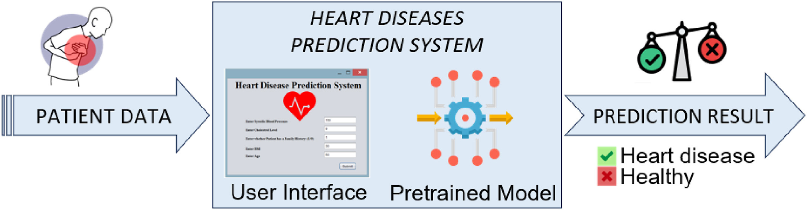

AI Heart Health Checker
Click the button below to access an AI-powered Heart Disease Prediction Tool.
Use AI for Heart PredictionUnderstanding Heart Disease
Heart disease is the leading cause of death worldwide, responsible for over 18 million deaths annually. It includes conditions such as:
- Coronary Artery Disease (CAD): Blocked arteries restricting blood flow.
- Arrhythmia: Irregular heartbeat leading to heart failure.
- Heart Failure: Weak heart muscles unable to pump blood efficiently.

Why Use AI in Heart Disease Prediction?
Traditional diagnosis methods can be slow and subjective. AI improves heart disease prediction through:
Speed: AI detects risks in seconds, reducing delays.
Accuracy: Machine learning finds hidden patterns in medical data.
24/7 Monitoring: AI-based devices track heart health continuously.
How AI Predicts Heart Disease
AI analyzes multiple factors such as ECG readings, cholesterol levels, and lifestyle data. The process includes:
| Step | Process | Impact |
|---|---|---|
| Data Collection | Gathers medical records, ECG, blood tests. | Provides a comprehensive health profile. |
| Pattern Recognition | Finds hidden risks in patient data. | Detects early symptoms before they worsen. |
| Risk Calculation | Assigns a personalized risk score. | Enables proactive treatment plans. |
Key Statistics
Annual Deaths: 18 million
AI Accuracy: Up to 95%
Diagnosis Speed: 10x Faster than traditional methods
Early Detection Benefit: 80% Lower Risk